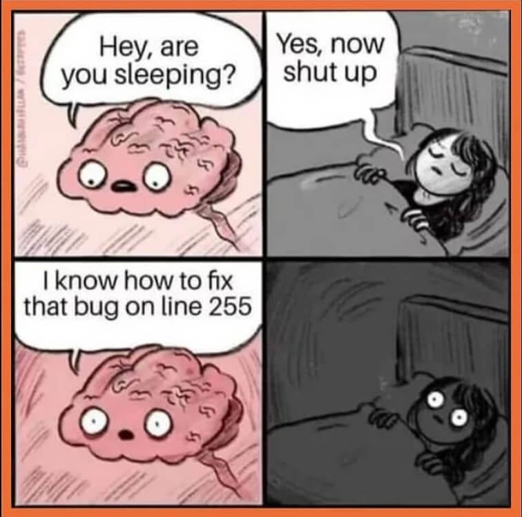

Teacher + Student = dumb and dumber
This content is derived from APC Magazine, November 2007.
We had no idea there were so many dumb IT trainers and students out there.

This content is derived from APC Magazine, November 2007.
We had no idea there were so many dumb IT trainers and students out there.

David Tune of Boambee, NSW, was reminded of a particularly clever pair of IT Diploma students who handed in a joint research assignment, complete with the required signed statement that it was all their original work.
Tune recalls: "Upon reading the work for grading, I was incredibly impressed to find three pages of the document written in perfect technical German, particularly given that the students in question were none too articulate when I asked 'Sprechen sie Deutsch?'
End result: assignment rejected, students counselled and more care taken when cutting and pasting to cover assignment work.
Neil Meyers, library assistant from Gilles Plains in SA, recalls an incident with a part-time computer lecturer a couple of years ago.
"I work in a vocational education library, and, on night shift, library staff are the default computer technicians/troubleshooters. One night, this part-time lecturer came to the counter, stating that she'd managed to get a CD-ROM disc stuck in the drive. She also said she felt a bit foolish, because she was instructing a class in basic computing and was unable to solve the problem in front of a room full of students.
So I wandered over to give her assistance, pushed the drive eject button, out popped the tray and... no disc to be seen.
Before I was able to ask out the obvious question, she piped up, 'That's the CD drive? I thought it was the other one!', pointing to an old 5.25in floppy disc slot, which was there even though the drives themselves had long since been decommissioned.
Someone from IT got out the disc the next day when they upended the machine and it fell out. Then, a week later, after I gave the lecturer her CD back, she was back within five minutes, saying, 'You won't believe it, I've done it again!'
And this was their computing tutor? So there I am in front of her class, shaking the heck out of the machine. So much for teaching people to handle their computers with care!"